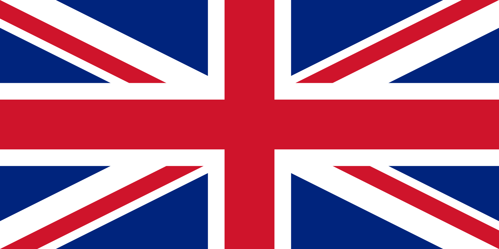
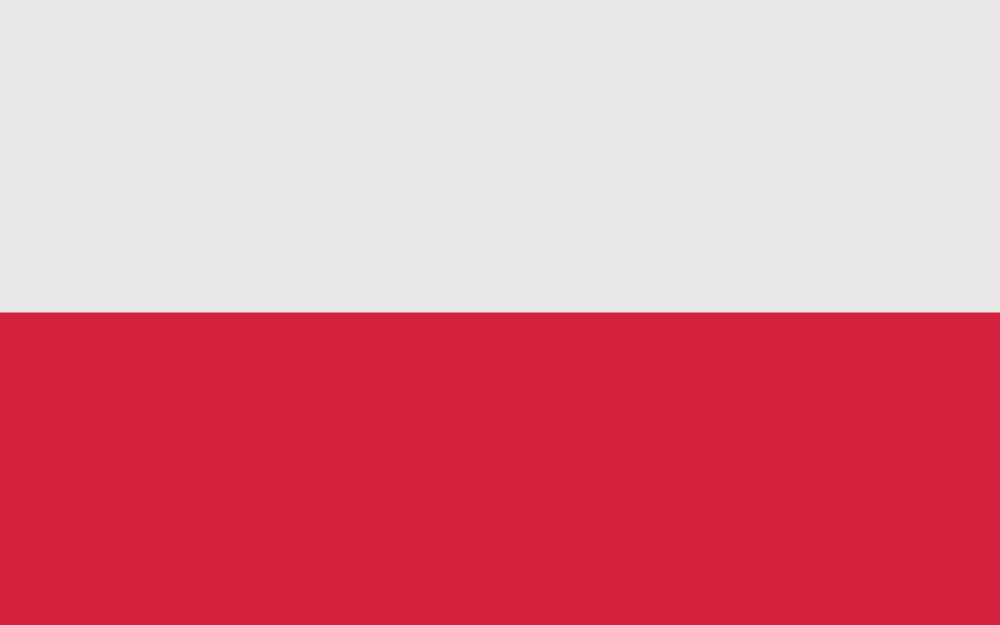

| lp. | Dane osobowe | Kraj | I | II | III | IV | V | VI | VII | VIII | IX | X | Suma | |
| 1. | Tai Woffinden | Wielka Brytania |  | 15 | 16 | 18 | 16 | 16 | 10 | 12 | 5 | 16 | 15 | 139 |
| 2. | Bartosz Zmarzlik | Polska |  | 9 | 4 | 10 | 13 | 19 | 14 | 18 | 12 | 15 | 15 | 129 |
| 3. | Fredrik Lindgren | Szwecja | 16 | 16 | 7 | 15 | 7 | 13 | 2 | 13 | 9 | 11 | 109 | |
| 4. | Maciej Janowski | Polska | 13 | 11 | 5 | 18 | 12 | 11 | 9 | 10 | 9 | 6 | 104 | |
| 5. | Greg Hancock | USA |  | 8 | 7 | 16 | 10 | 12 | 3 | 10 | 15 | 12 | 9 | 102 |
| 6. | Artiom Łaguta | Rosja | 13 | 8 | 12 | 8 | 6 | 6 | 13 | 7 | 4 | 20 | 97 | |
| 7. | Jason Doyle | Australia |  | 5 | 9 | 12 | 9 | 5 | 4 | 9 | 17 | 16 | 7 | 93 |
| 8. | Emil Sayfutdinov | Rosja | 8 | 15 | 11 | 14 | 8 | 6 | 3 | 5 | 8 | 11 | 89 | |
| 9. | Patryk Dudek | Polska | 10 | 14 | 6 | 6 | 10 | 10 | 12 | 16 | - | - | 84 | |
| 10. | Matej Zagar | Słowenia | 9 | 7 | 5 | 7 | 6 | 16 | 11 | - | 12 | 6 | 79 | |
| 11. | Nicki Pedersen | Dania |  | 2 | 8 | 12 | 3 | 6 | 15 | 6 | 7 | 8 | 7 | 74 |
| 12. | Chris Holder | Australia | | 10 | 5 | 9 | 7 | 7 | 5 | 0 | 10 | 7 | 5 | 65 |
| 13. | Martin Vaculik | Słowacja | - | - | 3 | 1 | 3 | 10 | 18 | 9 | 0 | 8 | 52 | |
| 14. | Przemysław Pawlicki | Polska | 3 | 5 | 5 | 1 | 10 | 3 | 3 | 2 | 3 | 1 | 36 | |
| 15. | Niels Kristian Iversen | Dania | | 4 | 5 | - | - | - | - | - | 5 | 12 | 10 | 36 |